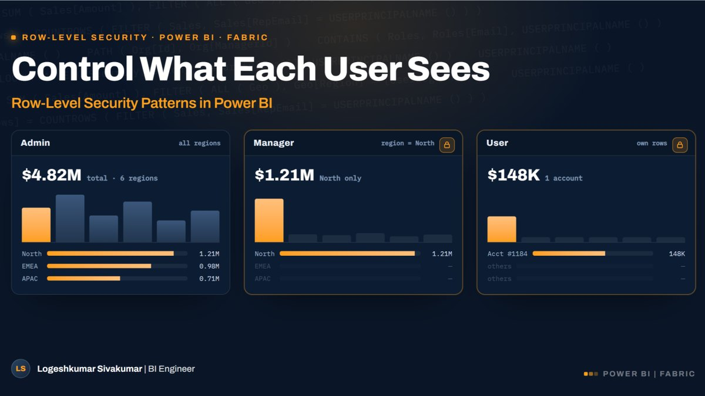
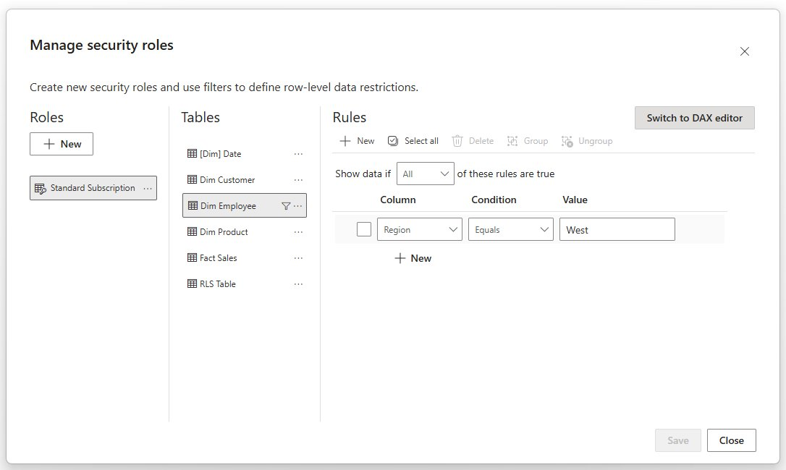
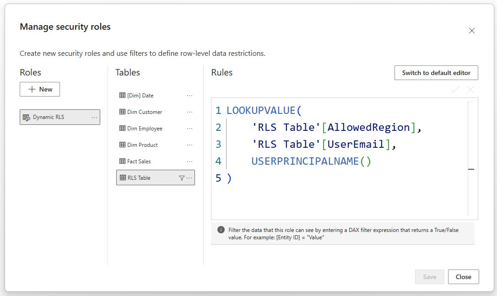
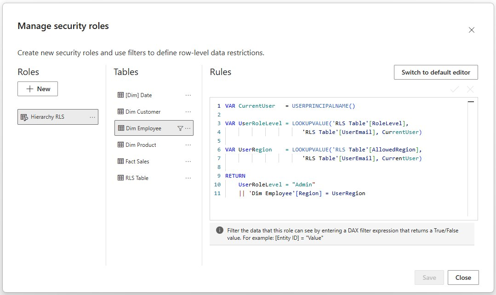
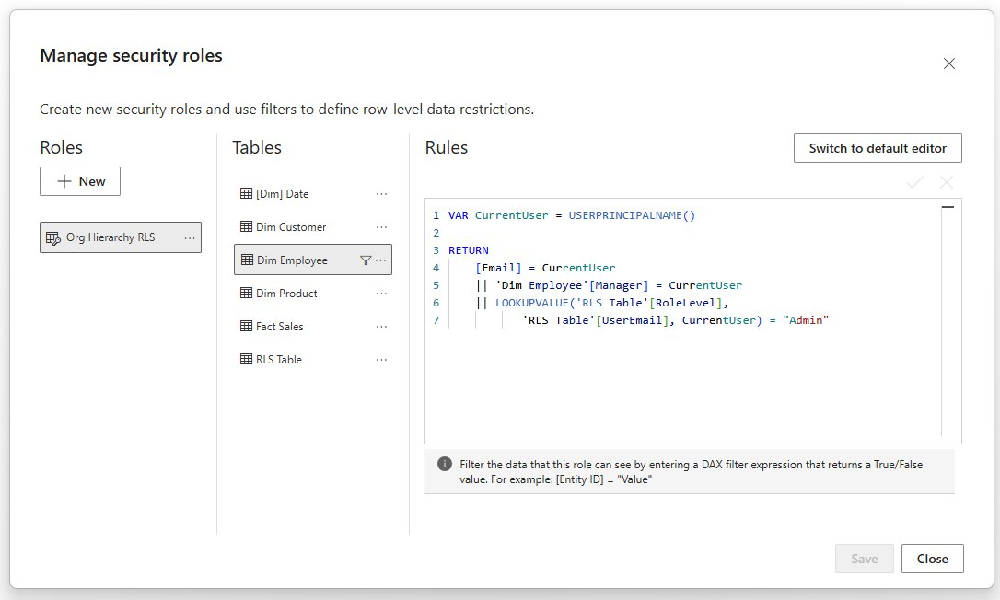

Control What Each User Sees: Row-Level Security Patterns in Power BI
Logeshkumar Sivakumar · June 18, 2026 · 5 min read

You publish one report. Fifty people open it. Every single one of them sees every row of data.
That is the default. And in most enterprise scenarios, that is wrong.
Row-Level Security in Power BI fixes this at the semantic model level. You define roles with DAX filter expressions. Every row is evaluated against that filter. Rows that return TRUE are visible. Everything else disappears. The user never sees the filter. They just see their data.
Two Ways to Define a Role
The first approach is Static RLS. You hardcode the filter directly into the role definition.

Clean and simple. But it does not scale. Five regions means five roles. Twenty regions means twenty roles. Every time the org chart changes, someone has to update the role.
Dynamic RLS replaces all of that with a single role that adapts to whoever is logged in. The USERPRINCIPALNAME() function returns the signed-in user's email from Power BI Service. A SecurityMapping table connects that email to their allowed region. One role. All users.

arun@company.com opens the report and sees North. bhavna@company.com opens the same report and sees South. Same role definition. Same published dataset. Completely different views. This is the enterprise standard.
Pattern 1: Role Hierarchy (Admin Sees All, Others See Their Region)
Region-based filtering works until you have users at different access levels sharing the same report. An admin needs to see everything. A regional manager needs to see only their region. A single flat role cannot handle both.
The fix is to add a RoleLevel column to the SecurityMapping table and use VAR to evaluate the user's level before applying any filter.

When UserRoleLevel is "Admin", the first condition returns TRUE immediately. No region filter is applied. The admin sees every row. For everyone else, only their assigned region passes through. One role definition handles both cases cleanly.
Always use VAR for multi-condition RLS. Nested LOOKUPVALUE calls inside a single RETURN expression become unreadable and are extremely difficult to debug when something breaks in production.
Pattern 2: Manager Sees Their Subordinates' Data
Role hierarchy solves the admin problem. It does not solve the manager problem.
A regional manager should see sales data for every employee reporting to them, not just the rows tagged to their region. If the data is already region-aligned, region-based RLS covers it. But in cross-region teams, that assumption breaks.
The clean solution is to add a ManagerEmail column directly to the DimEmployee table and filter on the relationship, not just the region.

Apply this filter to the DimEmployee table. The first condition lets a user see their own employee row. The second condition lets their manager see them. The third condition lets admins through entirely. Power BI propagates the filter from DimEmployee to FactSales through the relationship automatically.
This pattern scales directly to any org structure where access follows reporting lines rather than geographic regions.
Pattern 3: User-Scoped KPI Measures: Lock a KPI Card data to the Logged-In User Regardless of Slicers
RLS filters rows. It does not freeze visuals.
Here is the gap: a user with North access opens the report. They select South in the region slicer. The KPI card now shows blank or zero because they have no South data. That is confusing to the end user and looks like a broken report.
The problem is not RLS. RLS is doing its job correctly. The problem is that the KPI card is responding to the slicer when it should be ignoring it.
The fix is a DAX measure using CALCULATE to hardcode the filter to whoever is logged in, making the slicer irrelevant to that specific card.
-- Measure: always returns the logged-in user's region total, ignores slicer selection
My Region Sales =
VAR MyRegion = LOOKUPVALUE(
SecurityMapping[AllowedRegion],
SecurityMapping[UserEmail],
USERPRINCIPALNAME()
)
RETURN
CALCULATE(
SUM(FactSales[NetAmount]),
DimCustomer[Region] = MyRegion
)Here is what happens step by step:
- USERPRINCIPALNAME() captures the logged-in user's email
- LOOKUPVALUE looks up their assigned region from the SecurityMapping table
- CALCULATE applies that region as a hard filter on FactSales, overriding whatever the slicer says
arun@company.com logs in. The KPI card reads North and locks to it. He selects South in the slicer to explore the rest of the report. The card stays on North. It does not move.
Use this pattern for any "My Numbers" card in an executive or regional dashboard where a personal metric should never be affected by exploratory filtering elsewhere on the page.
The Limitation Most Teams Miss
- Dataset owners in Power BI Service bypass RLS entirely. Role assignments have no effect on them. They always see all data. Before publishing, confirm whether the dataset owner should have unrestricted access. In regulated environments this is a compliance checkpoint, not a technical footnote.
- Always apply RLS filters to dimension tables, not fact tables. Power BI propagates the filter through model relationships to the fact table automatically.
- After building your roles in Power BI Desktop, three steps remain: publish the semantic model, assign users to roles in Power BI Service under Dataset Settings, and verify each role using "Test as role" to confirm the filters behave as expected.
Which RLS pattern have you implemented in production? Share your approach in the comments. 💬
Reference: Row-level security (RLS) with Power BI, Microsoft Learn
#PowerBI #MicrosoftFabric #RowLevelSecurity #DAX #DataSecurity #DataGovernance #BIDeveloper #SemanticModel #BusinessIntelligence